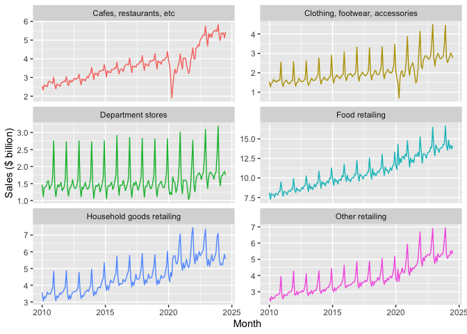
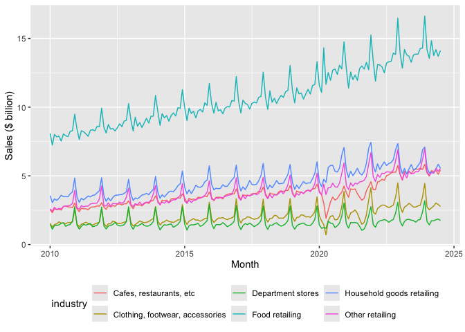
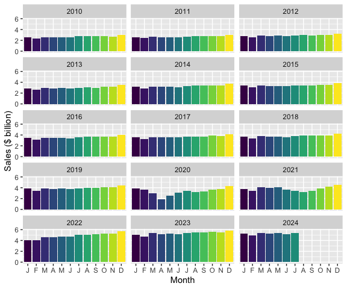
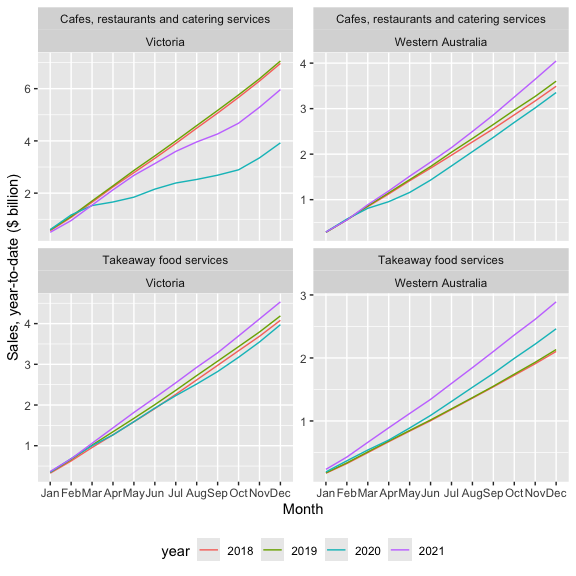
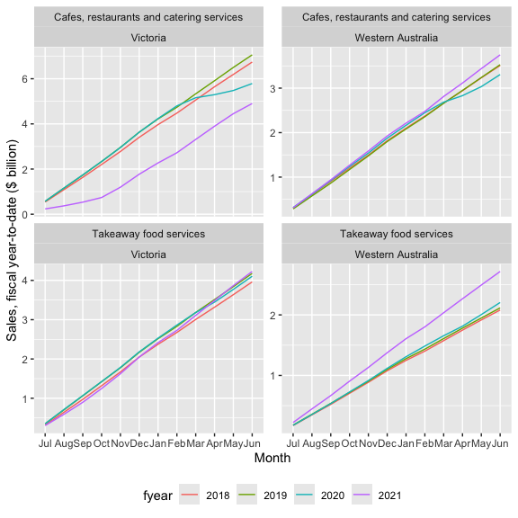
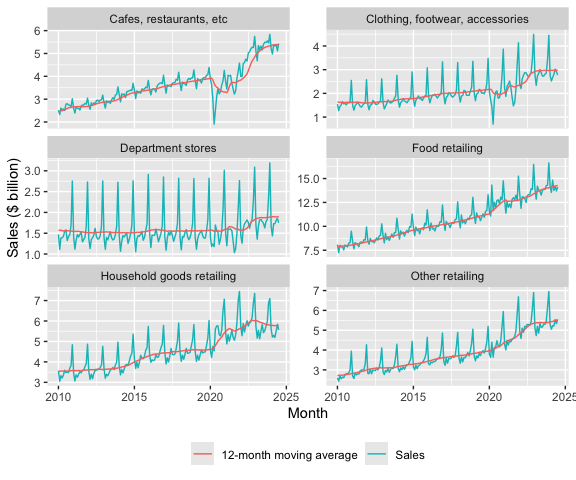
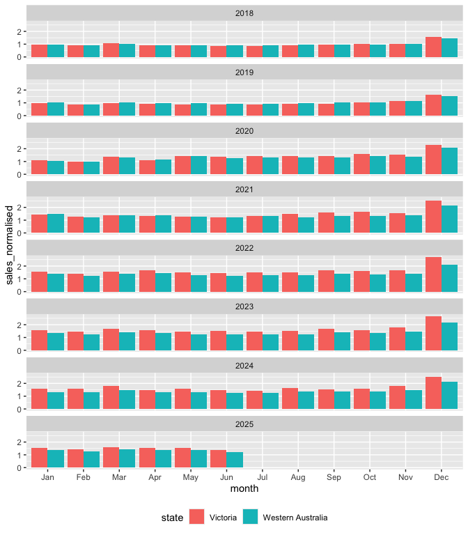

![]()
library(tidyverse)
library(modelsummary)
library(dbplyr)
library(DBI)Retail sales
Tip 1
The data we focus on in this chapter come from the Australian Bureau of Statistics (ABS). The ABS describes itself as “Australia’s national statistical agency and an official source of independent, reliable information.” We discuss the source of the data in more detail in Section 2.3.5.
The data are stored as a comma-separated value (CSV) file format in data/retail_sales.csv in the repository you downloaded for this course.3 There is a good chance that, if Microsoft Excel is installed on your computer, double-clicking on this file on your computer will open it in Excel. To understand the contents of the file, it’s actually better to open it in a text editor, such as Notepad (Windows) or TextEdit (MacOS). CSV files are a common format for sharing data, as it is a simple format that many software packages can handle. Chapter 7 of R for Data Science discusses CSVs in more detail.
Here we use read_csv() from the Tidyverse to load the data into R.
retail_sales <- read_csv("data/retail_sales.csv")Rows: 96957 Columns: 6
── Column specification ────────────────────────────────────────────────────────
Delimiter: ","
chr (3): industry, state, parent_industry
dbl (2): sales, ind_level
date (1): date
ℹ Use `spec()` to retrieve the full column specification for this data.
ℹ Specify the column types or set `show_col_types = FALSE` to quiet this message.As can be seen in the output above, read_csv() will attempt to infer a number of features of the data. For example, the first row of the CSV file is assumed to provide the names the columns of the resulting data frame:
industry,state,date,sales,ind_level,parent_industryAdditionally, read_csv() will guess the appropriate type for each column. From the output above, we can see that industry, state, and parent_industry are imported as character columns, that date has type date, and that sales and ind_level have type dbl (“double” being the R type for storing real numbers).
The data in retail_sales are monthly estimates of turnover [sales in dollars] and volumes for retail businesses, including store and online sales, by industry group and industry subgroup. According to the ABS, “estimates of turnover are compiled from the monthly Retail Business Survey. About 700 ‘large’ businesses are included in the survey every month, while a sample of about 2,700 ‘smaller’ businesses is selected.”
We can take a peek at the first few rows of data by typing retail_sales in the R console:
retail_sales# A tibble: 96,957 × 6
industry state date sales ind_level parent_industry
<chr> <chr> <date> <dbl> <dbl> <chr>
1 Cafes, restaurants and cate… Aust… 1982-04-01 4.4 2 Cafes, restaur…
2 Cafes, restaurants and cate… New … 1982-04-01 61.8 2 Cafes, restaur…
3 Cafes, restaurants and cate… Nort… 1982-04-01 NA 2 Cafes, restaur…
4 Cafes, restaurants and cate… Quee… 1982-04-01 18.7 2 Cafes, restaur…
5 Cafes, restaurants and cate… Sout… 1982-04-01 14.3 2 Cafes, restaur…
6 Cafes, restaurants and cate… Tasm… 1982-04-01 1.9 2 Cafes, restaur…
7 Cafes, restaurants and cate… Tota… 1982-04-01 146. 2 Cafes, restaur…
8 Cafes, restaurants and cate… Vict… 1982-04-01 36.4 2 Cafes, restaur…
9 Cafes, restaurants and cate… West… 1982-04-01 8 2 Cafes, restaur…
10 Cafes, restaurants and take… Aust… 1982-04-01 7.6 1 Total (Industr…
# ℹ 96,947 more rowsWe can also get a succinct take on the data using summary():
summary(retail_sales) industry state date sales
Length:96957 Length:96957 Min. :1982-04-01 Min. : 0.4
Class :character Class :character 1st Qu.:1992-12-01 1st Qu.: 27.5
Mode :character Mode :character Median :2003-08-01 Median : 107.8
Mean :2003-08-01 Mean : 533.4
3rd Qu.:2014-04-01 3rd Qu.: 371.1
Max. :2024-12-01 Max. :45943.1
NA's :6970
ind_level parent_industry
Min. :0.000 Length:96957
1st Qu.:1.000 Class :character
Median :2.000 Mode :character
Mean :1.619
3rd Qu.:2.000
Max. :2.000
1 Understanding the industries
According to the ABS, the statistics from which retail_sales are derived are presented at two levels of detail: industry group, “the broadest industry level comprising 6 industry groups”, and industry subgroup, which is “the most detailed industry level comprising 15 industry subgroups.” In retail_sales, industry groups are associated with ind_level equal to 1 and industry subgroups are associated with ind_level equal to 2. For each, industry subgroup, the industry group to which it belongs is identified in parent_industry.
We start by investigating the data in industry, ind_level, and parent_industry. Below we see that Total (Industry) is the parent industry for all industries having ind_level equal to one and that parent_industry is missing whenever ind_level is zero. Note that only five distinct industries are listed under parent_industry when ind_level is two.
retail_sales |>
count(parent_industry, ind_level) |>
arrange(ind_level)# A tibble: 7 × 3
parent_industry ind_level n
<chr> <dbl> <int>
1 <NA> 0 4617
2 Total (Industry) 1 27702
3 Cafes, restaurants and takeaway food services 2 9234
4 Clothing, footwear and personal accessory retailing 2 9234
5 Food retailing 2 13851
6 Household goods retailing 2 13851
7 Other retailing 2 18468We can identify the missing industry group by using an anti-join (anti_join()) and join_by(industry == parent_industry). The output of following query identifies the problem case as “Department stores”.
retail_sales |>
filter(ind_level == 1) |>
anti_join(retail_sales, by = join_by(industry == parent_industry)) |>
count(industry)# A tibble: 1 × 2
industry n
<chr> <int>
1 Department stores 4617Because the function anti_join(x, y) returns all rows in x that don’t have a match in y, it is useful for finding implicit missing values.4
Additionally, while the ABS website describes the data as “comprising 15 industry subgroups”, we see only 14 subgroups in the data:
retail_sales |>
distinct(industry, ind_level) |>
count(ind_level)# A tibble: 3 × 2
ind_level n
<dbl> <int>
1 0 1
2 1 6
3 2 14What explains these discrepancies? The natural explanation is that Department stores is an industry group that has only one subgroup, itself. In effect, Department stores could be considered as having ind_level equal to both one and two.
A natural question is whether sales of the subgroups add up to the sales of the industry groups.5 To answer this question, I first collect data—the sum of sales by state and year—on industry groups directly and store them in level_1_df.
level_1_df <-
retail_sales |>
mutate(year = year(date)) |>
filter(ind_level == 1, year < 2024) |>
group_by(state, year, industry, ind_level) |>
summarize(no_missing = as.integer(all(!is.na(sales))),
sales = sum(sales, na.rm = TRUE),
.groups = "drop")I then collect the same data on industry groups directly by aggregating the applicable industry subgroups and store them in level_2_df.
level_2_df <-
retail_sales |>
mutate(year = year(date)) |>
filter(ind_level == 2, year < 2024) |>
group_by(state, year, parent_industry, ind_level) |>
summarize(no_missing = as.integer(all(!is.na(sales))),
sales = sum(sales, na.rm = TRUE),
.groups = "drop") |>
rename(industry = parent_industry)Finally, I combine the data from both of these data frames into one data frame using union_all() and save the result in combined_levels.
combined_levels <-
level_1_df |>
union_all(level_2_df) |>
mutate(year = as.character(year),
ind_level = as.character(ind_level))I will use datasummary() from the modelsummary package to display summary statistics. I create pretty_num() to format the numbers in the way that I want.
pretty_num <- function(x) prettyNum(as.integer(x), format = "f",
big.mark = ",")I create alternative shorter names for two industries that have names that are too long to fit in the tables I want to display.
short_names <-
tribble(
~industry, ~short_ind,
"Cafes, restaurants and takeaway food services", "Cafes, restaurants, etc",
"Clothing, footwear and personal accessory retailing",
"Clothing, footwear, accessories")In Table 1, I display the total sales for each industry group calculated in two ways: once by summing up the values for the industry group and again by summing up the values for the subgroups comprised by the group.
combined_levels |>
left_join(short_names, by = "industry") |>
mutate(industry = coalesce(short_ind, industry)) |>
filter(year >= 2019,
state == "Total (State)",
industry != "Department stores") |>
datasummary(industry * ind_level ~ sales * sum * year,
data = _, fmt = pretty_num,
digits = 1)| industry | ind_level | 2019 | 2020 | 2021 | 2022 | 2023 |
|---|---|---|---|---|---|---|
| Cafes, restaurants, etc | 1 | 46,801 | 39,748 | 45,783 | 58,154 | 63,985 |
| 2 | 46,801 | 39,749 | 45,783 | 58,154 | 63,985 | |
| Clothing, footwear, accessories | 1 | 26,010 | 24,191 | 28,061 | 34,756 | 35,610 |
| 2 | 26,010 | 24,190 | 28,061 | 34,756 | 35,610 | |
| Food retailing | 1 | 135,269 | 151,545 | 152,866 | 160,936 | 168,448 |
| 2 | 135,269 | 151,545 | 152,866 | 160,936 | 168,448 | |
| Household goods retailing | 1 | 55,281 | 64,958 | 67,431 | 72,165 | 69,536 |
| 2 | 55,281 | 64,958 | 67,431 | 72,164 | 69,536 | |
| Other retailing | 1 | 47,401 | 52,152 | 57,263 | 64,159 | 64,758 |
| 2 | 47,400 | 52,152 | 57,263 | 64,160 | 64,757 |
With any data set it is important to understand the meaning of any explicit missing values. For the five industry groups (excluding Department stores for the reasons discussed above), we have complete information at level 1 for a year if there are 12 months of data for each industry group at level 1. And we have complete information at level 2 for a year if there are 12 months of data for each sub-group at level 2. From Table 2, we see that larger states have complete data for all five industries at both levels one and two, but that smaller states such as Tasmania and Northern Territory have missing values at both levels.6
combined_levels |>
filter(year >= 2019,
industry != "Department stores") |>
datasummary(state * ind_level ~ no_missing * sum * year,
data = _, fmt = pretty_num)| state | ind_level | 2019 | 2020 | 2021 | 2022 | 2023 |
|---|---|---|---|---|---|---|
| Australian Capital Territory | 1 | 5 | 5 | 5 | 5 | 5 |
| 2 | 5 | 5 | 5 | 5 | 5 | |
| New South Wales | 1 | 5 | 5 | 5 | 5 | 5 |
| 2 | 5 | 5 | 5 | 5 | 5 | |
| Northern Territory | 1 | 4 | 3 | 3 | 4 | 4 |
| 2 | 3 | 2 | 2 | 3 | 3 | |
| Queensland | 1 | 5 | 5 | 5 | 5 | 5 |
| 2 | 4 | 4 | 4 | 4 | 4 | |
| South Australia | 1 | 5 | 5 | 5 | 5 | 5 |
| 2 | 4 | 4 | 4 | 4 | 4 | |
| Tasmania | 1 | 4 | 3 | 3 | 4 | 4 |
| 2 | 3 | 3 | 3 | 4 | 4 | |
| Total (State) | 1 | 5 | 5 | 5 | 5 | 5 |
| 2 | 5 | 5 | 5 | 5 | 5 | |
| Victoria | 1 | 5 | 5 | 5 | 5 | 5 |
| 2 | 5 | 5 | 5 | 5 | 5 | |
| Western Australia | 1 | 5 | 5 | 5 | 5 | 5 |
| 2 | 5 | 5 | 5 | 5 | 5 |
1.1 Exercises
Describe in words what the query above using
anti_join()is doing.What do functions like
inner_join()andunion_all()have in common? How do they differ?Using the documentation provided for them, explain how
union_all()andunion()differ. Would you expect different results if we had usedunion()instead ofunion_all()in the code above?Suppose we wanted to focus our analysis on industry subgroups, but wanted to retain “Department stores” as part of this. Write code to create
ind_sub_groups, a data set comprising data fromretail_salesthat we could use for this purpose.In creating Table 1, I used
left_join()and thencoalesce(). Why did I need to useleft_join()rather thaninner_join(). (Hint: Replaceleft_join()withinner_join()and see what happens.)What industry group has missing values at level 2 for Queensland, as seen in Table 2? Which subgroups are affected?
Produce a version of Table 1 but focused on Queensland instead of all of Australia (
Total (State)). Do you see an issue related to the issue flagged in the previous question?Produce a version of Table 1 but focused on Tasmania instead of all of Australia (
Total (State)). Do you see an issue related to the issue flagged in the previous question?
2 Panel data
A very common form of data in business and economics is the time-series. Time-series data involve repeated measurements over time, typically at regular intervals. Some examples of time-series data sets are:
- Daily stock prices over time
- Quarterly measures of an economy’s gross domestic product
- Measures of annual profits for a company
An alternative to time-series data is known as cross-sectional data, which involves measures at a point of time for multiple entities. Some examples of cross-sectional data sets are:
- Closing stock prices for multiple companies on a given day
- Measures of the gross domestic product for different economies for a given quarter
- Measures of profits for several companies in a given year
Often cross-sectional and time-series data will exist in a single data set. Such a data set is often known as a panel data set. Some examples of panel data sets are:
- Daily stock prices for multiple companies over time
- Quarterly measures of the gross domestic product for different economies over several periods
- Annual profits for several companies over several year
2.1 Plotting panel data
The retail_sales data set is a panel data set with monthly data on retail sales for several “states” and several industries.7 For a given state and industry, the monthly retail sales series is a time-series. For an initial exploration of retail_sales, I construct df_group_plot, a data set focused on a subset of the available dates and the data for all states combined (state == "Total (State)") and the industry groups (ind_level == 1).
start_date <- as.Date("2010-01-01")
end_date <- as.Date("2024-07-01")
df_group_plot <-
retail_sales |>
left_join(short_names, by = "industry") |>
mutate(industry = coalesce(short_ind, industry)) |>
filter(state == "Total (State)", ind_level == 1,
between(date, start_date, end_date))Figures 1 and 2 plot sales from January 2010 until July 2024 by industry group. While Figures 1 and 2 use the same underlying data, they present the information in two different ways.
df_group_plot |>
ggplot(aes(x = date, y = sales / 1e3, colour = industry)) +
ylab("Sales ($ billion)") +
xlab("Month") +
geom_line() +
facet_wrap(industry ~ ., ncol = 2, scales = "free_y") +
theme(legend.position = "none")

facet_wrap()
df_group_plot |>
ggplot(aes(x = date, y = sales / 1e3, colour = industry)) +
ylab("Sales ($ billion)") +
xlab("Month") +
geom_line() +
theme(legend.position = "bottom")

2.1.1 Exercises
Identify three patterns in the data observed in Figures 1 and 2. For each pattern, provide a conjecture for what explains the pattern.
Describe in words how the code used to create Figure 1 was modified to create Figure 2.
In your view, which plot—Figure 1 or Figure 2—best presents the information? Is one better than the other for identifying the patterns you identified in the previous question?
2.2 Seasonality
One thing you likely noticed about Figures 1 and 2 is that retail sales appear to be highly seasonal. Seasonality refers to the tendency of some time-series to exhibit recurring patterns over time. For example, ice cream sales tend to be higher in summer, while sales of ski boots probably peak in winter months. To see how we can better understand seasonality, consider Figure 3, which plots sales of Cafes, restaurants and takeaway food services for all states combined in a way that allows us to consider each year separately.
retail_sales |>
filter(industry == "Cafes, restaurants and takeaway food services",
state == "Total (State)",
between(date, start_date, end_date)) |>
mutate(month = month(date, label = TRUE),
year = year(date)) |>
ggplot(aes(x = month, y = sales / 1e3, fill = month)) +
ylab("Sales ($ billion)") +
xlab("Month") +
geom_col() +
facet_wrap(year ~ ., ncol = 3) +
theme(legend.position = "none") +
scale_x_discrete(labels = \(x) str_sub(x, 1, 1))

2.2.1 Exercises
Looking at Figure 3, which month (if any) generally has the highest sales in each year? Provide a conjecture for the underlying forces causing this month to have the highest sales in most or all years?
Looking at Figure 3, which month (if any) generally has the lowest sales in each year? Provide a conjecture for the underlying forces causing this month to have the lowest sales in most or all years?
What happens if you omit “
, fill = month” from the code creating Figure 3? Does the use of colour add useful information to this plot?What is the line of code “
scale_x_discrete(labels = \(x) str_sub(x, 1, 1))” doing here? (Hint: Omit this line and compare the plot produced with Figure 3. Also look at the documentation forstr_sub().)Looking again at Figures 1 and 2, are all industries equally seasonal? Which industry do you consider to be the most seasonal? The least seasonal? How might you measure the seasonality of each industry using data in that plot? What complications do you anticipate in measuring seasonality?
Tip 2: Alternative engines
So far, we have done many calculations using mutate() and summarize(), combined data frames using functions like inner_join(), or focused on certain rows or columns using filter() or select(). We have generally applied the functions to data in data frames, which we understand to comprise vectors of data stored in the memory (RAM) of our computer. However, as you work more with data, you are likely to encounter situations where this approach has limitations.
For example, you might have the data stored on disk, but it either would take too long to load or simply cannot fit into RAM. It turns out that there are packages that provide alternative engines that can help us work with this kind data with little change to how we have done things so far:
- One popular option is
data.table, a package that provides a “high-performance version of base R’sdata.framewith syntax and feature enhancements for ease of use, convenience and programming speed.” - Another option is Apache Arrow, “a multi-language toolbox designed for efficient analysis and transport of large datasets.” The
arrowR package provides adplyrbackend allowing users to analyze larger-than-memory datasets using familiar syntax. - Another possibility is that the data you want to work with are stored on a remote computer, such as a database server or a Spark cluster. If the data or interest are stored in a database, the
DBIpackage provides an interface allowing users to connect to most popular databases, execute SQL, and retrieve results.
The dbplyr package allows users to create remote data frames and execute queries using a familiar interface often identical to that offered by dplyr. Using a remote database server offers a number of potential advantages:
- Moving processing to where the data are located
- Moving processing to a more powerful computer
- Avoiding loading of data into RAM
In this book, in addition to using dplyr with data frames, we explore the use of DuckDB as an analytical engine. DuckDB provides an SQL interface, so working with it is much like working with PostgreSQL or MySQL but, unlike most database server products, DuckDB requires almost no setup and offers significant performance benefits. While we use DuckDB largely for these performance benefits, we also get the happy side-effect of learning how to work with remote databases.
Another advantage offered by DuckDB is access to more powerful window functions than are offered by dplyr itself. We see these in use in Section 2.3.
2.3 Time windows
Many analyses in business and economics involve calculations over time windows. Some examples:
- Returns on stocks over the days or months after their initial public offerings (IPOs)
- Comparing sales or profits for the year to date with previous years
- Smoothing sales over time using moving averages
We will see that working with time windows is greatly facilitated by the use of window functions and that the SQL engine offered by DuckDB provides the more-powerful window functions that we will need here.
To create a DuckDB engine, we simply create a connection.
db <- dbConnect(duckdb::duckdb())We can then use the function copy_to() to move the data from R into the in-memory DuckDB database we have created.8
retail_sales_db <-
retail_sales |>
copy_to(db, df = _, overwrite = TRUE)We can inspect retail_sales_db at the R console much as we did with retail_sales above.
retail_sales_db# A query: ?? x 6
# Database: DuckDB 1.4.4 [igow@Darwin 25.4.0:R 4.5.2/:memory:]
industry state date sales ind_level parent_industry
<chr> <chr> <date> <dbl> <dbl> <chr>
1 Cafes, restaurants and cate… Aust… 1982-04-01 4.4 2 Cafes, restaur…
2 Cafes, restaurants and cate… New … 1982-04-01 61.8 2 Cafes, restaur…
3 Cafes, restaurants and cate… Nort… 1982-04-01 NA 2 Cafes, restaur…
4 Cafes, restaurants and cate… Quee… 1982-04-01 18.7 2 Cafes, restaur…
5 Cafes, restaurants and cate… Sout… 1982-04-01 14.3 2 Cafes, restaur…
6 Cafes, restaurants and cate… Tasm… 1982-04-01 1.9 2 Cafes, restaur…
7 Cafes, restaurants and cate… Tota… 1982-04-01 146. 2 Cafes, restaur…
8 Cafes, restaurants and cate… Vict… 1982-04-01 36.4 2 Cafes, restaur…
9 Cafes, restaurants and cate… West… 1982-04-01 8 2 Cafes, restaur…
10 Cafes, restaurants and take… Aust… 1982-04-01 7.6 1 Total (Industr…
# ℹ more rowsThe output is almost identical to the output shown above when we typed retail_sales at the R console. The two differences are at the top and bottom of the output. At the top, we now see two lines indicating that the data come from a table inside an in-memory (:memory) DuckDB database and thus represent a remote data frame rather than a local data frame.9 At the bottom, we no longer see the numeber of rows. This partly reflects the lazy nature of remote data frames: we have to execute a specific query to determine the number of rows.10
2.3.1 Year-to-date (YTD)
Often we will want to compare performance for the current period with that in earlier periods. If we were in the middle of August 2025, it would not make sense to compare total sales for 2025 with total sales for 2024, as this would be comparing seven months (January through July) with twelve months. One standard approach is to calculate year-to-date performance and compare that with performance for a comparable period from earlier years.
For this exercise, I will focus on industry subgroups of Cafes, restaurants and takeaway food services and just two states—Victoria and Western Australia. I create cafes_vic_wa_db, a data frame focused on these observations.
cafes_vic_wa_db <-
retail_sales_db |>
filter(str_detect(parent_industry, "^Cafes"),
state %in% c("Victoria", "Western Australia"))The next step is to create ytd_plot_df, the data frame that will contain the data we need to plot year-to-date sales. Here we first calculate year and then group by industry, state, and year. Grouping by industry and state makes sense as it does not make sense to aggregate data across industries and states in this context. Grouping additionally by year reflects the nature of the YTD calculation we are making: only values for a given year should be consider.
We next use window_order(date) so that the following mutate() command puts the data in the correct order. It is helpful to think of the windows that are being created.11
The following line invokes cumsum(sum) to calculate the cumulate sales for each (industry, state, year) up to the current row (remember that the rows are order by date) before invoking ungroup() and then filter() to focus on the years we want to plot.
The collect() command brings the data into R, converting the remote data frame to a local data frame. The last line converts year to a character variable and calculates month using the month() function.
ytd_plot_df <-
cafes_vic_wa_db |>
mutate(year = year(date)) |>
group_by(industry, state, year) |>
window_order(date) |>
mutate(sales_ytd = cumsum(sales)) |>
ungroup() |>
filter(between(year, 2018, 2021)) |>
collect() |>
mutate(year = as.character(year),
month = month(date, label = TRUE))With ytd_plot_df in hand, creating Figure 4 is quite straightforward:12
ytd_plot_df |>
ggplot(aes(x = month, y = sales_ytd / 1e3,
color = year, group = year)) +
ylab("Sales, year-to-date ($ billion)") +
xlab("Month") +
geom_line() +
facet_wrap(industry ~ state, ncol = 2, scales = "free_y") +
theme(legend.position = "bottom")

2.3.1.1 Exercises
What patterns do you observe in Figure 4? Can you suggest explanations for these patterns?
Is
cafes_vic_wa_db(created by the code above) a remote data frame or a local data frame? How can you tell?Does
filter(str_detect(parent_industry, "^Cafes"))produce the same result asfilter(parent_industry == "Cafes, restaurants and takeaway food services")? What benefit is there from using the former option rather than the latter?What happens if you replace the function
window_order()with functionarrange().As an analogue to
cafes_vic_wa_db(created usingretail_sales_db), createcafes_vic_wausingretail_sales. Usecafes_vic_wato create a version ofytd_plot_df. (Hint: You will need to usearrange()in place ofwindow_order().) Does the plot created using this version ofytd_plot_dflook the same as Figure 4?Do we need both
color = yearandgroup = yearin creating Figure 4? How can you tell?What happens if we omit
ungroup()from the code creatingytd_plot_df? Is there any effect onytd_plot_df? Is there any effect on the appearance of Figure 4?What is the data type for
monthinytd_plot_df? (Hint: You may find it helpful to typeytd_plot_df$monthat the R console or to use the functionclass().)What happens if we move the
mutate()code creatingyearandmonthinytd_plot_dfbefore thecollect()call? Does the code still run? Does the plot look fine? Can you explain what’s going on? (Hint: Go back to the previous question with the new version ofytd_plot_df.)In creating
ytd_plot_df, can we move the application ofas.character()to the linemutate(year = year(date))? (That is, can we useas.character(year(date))in that line?) What other code do we need to modify to take this approach? After making the needed modification, does the plot produced look the same as Figure 4? Why did we not need to use the same type foryearas we did formonth? (Hint: You may find it helpful to typeytd_plot_df$yearat the R console or to use the functionclass().)
2.3.2 Fiscal year-to-date (YTD)
Above we calculated YTD numbers using calendar years. However, for many purposes, most companies in Australia reckon fiscal years from 1 July to 30 June and we might want to plot fiscal YTD numbers.
To make this happen, I do two things. First, I create a function fiscal_month() that behaves a lot like month(), but with an extra argument that allows me to specify the first month of the fiscal year (e.g., first_month = 7 would make July the first month of the fiscal year). For present purposes, you don’t need to understand the details of fiscal_month(), but note that this actually borrows elements from the original month() function itself.
fiscal_month <- function(x, first_month = 7, label = TRUE, abbr = TRUE) {
new_order <- c(first_month:12, 1:(first_month - 1))
labels <- levels(month(x, label = label, abbr = abbr))
new_labels <- labels[new_order]
ordered(month(x), levels = new_order, labels = new_labels)
}The second thing I do is create fyear to represent fiscal year based on fiscal years starting in July. Below is code creating fytd_plot_df using fyear in place of year used in ytd_plot_df and using fiscal_month() in place of month().
fytd_plot_df <-
cafes_vic_wa_db |>
mutate(year = year(date),
fyear = year + as.integer(month(date) >= 7)) |>
group_by(industry, state, fyear) |>
window_order(date) |>
mutate(sales_ytd = cumsum(sales)) |>
ungroup() |>
filter(between(fyear, 2018, 2021)) |>
collect() |>
mutate(fyear = as.character(fyear),
month = fiscal_month(date))The following code creates Figure 5 and is essentially identical to that used to create Figure 4 except for changes to reflect use of fyear in place of year.
fytd_plot_df |>
ggplot(aes(x = month, y = sales_ytd / 1e3,
color = fyear, group = fyear)) +
ylab("Sales, fiscal year-to-date ($ billion)") +
xlab("Month") +
geom_line() +
facet_wrap(industry ~ state, ncol = 2, scales = "free_y") +
theme(legend.position = "bottom")

2.3.2.1 Exercises
In words, what is the code creating
fyearin the creation offytd_plot_dfdoing? (Hint: You might find it helpful to appendcount(fyear, date) |> arrange(date)to the first two lines of the code creatingfytd_plot_df.)Why is important to
filter()usingfyearrather thanyear(i.e.,between(fyear, 2018, 2021)))? (Hint: Change thefilter()to useyearinstead and look at the resulting plot.)What happens if the call to
fiscal_month()in the creation offytd_plot_dfis replaced by a call tomonth = month(date, label = TRUE)? (Hint: Change the code and look at the resulting plot.)What features of the variable
monthin the data framefytd_plot_dfensure that we get the plot we are looking for?Could we use
cafes_vic_wain place ofcafes_vic_wa_dbto createfytd_plot_df? What changes do we need to make to the code? Does the resulting plot look the same as Figure 5?
2.3.3 Moving averages
Another calculation using time windows that is commonly used is the moving average. A moving average can be used to smooth out a volatile time series by replacing the value for period \(t\) with the average values for the periods \(t - k\) through \(t\), where \(k \geq 1\). With seasonal data, it seems natural to consider twelve-month periods (i.e., \(k = 11\)).
To indicate that we want to use windows from \(t - 11\) to \(t\), we can use window_frame(-11, 0). This causes aggregate functions such as mean() and sum() to be applied as window functions to the resulting data frame.13
group_ma_plot_df <-
retail_sales_db |>
left_join(short_names, by = "industry", copy = TRUE) |>
mutate(industry = coalesce(short_ind, industry)) |>
group_by(industry, state) |>
window_order(date) |>
window_frame(-11, 0) |>
mutate(sales_ma = mean(sales, na.rm = TRUE),
count_ma = sum(as.integer(!is.na(sales)), na.rm = TRUE)) |>
ungroup() |>
filter(state == "Total (State)", ind_level == 1,
between(date, start_date, end_date),
count_ma == 12)Figure 6 plots both the underlying time-series and the twelve-month moving average.
group_ma_plot_df |>
ggplot(aes(x = date)) +
geom_line(aes(y = sales / 1e3, colour = "Sales")) +
geom_line(aes(y = sales_ma / 1e3, colour = "12-month moving average")) +
ylab("Sales ($ billion)") +
xlab("Month") +
facet_wrap(industry ~ ., ncol = 2, scales = "free_y") +
theme(legend.title = element_blank(),
legend.position = "bottom")

An alternative approach to constructing the data frame for the plot above would use pivot_longer:
group_ma_plot_df_alt <-
group_ma_plot_df |>
pivot_longer(cols = starts_with("sales"),
names_to = "series",
values_to = "sales")2.3.3.1 Exercises
Construct a plot like Figure 6 using
group_ma_plot_df_altinstead ofgroup_ma_plot_df. (Hint: These code snippets may help:ggplot(aes(x = date, y = sales, colour = series))andgeom_line().) What differences do you see between your plot and Figure 6? Can you remove these differences by modifyinggroup_ma_plot_df_alt? (Hint: Try usingmutate()withcase_when().)Does the moving average help you to discern trends or patterns that are more difficult to see with the original time-series? If so, discuss how it helps. If not, why not?
Why do you think I included
count_ma == 12in thefilter()arguments? What happens if you omit this? Suppose I wanted to include the moving average in the plot only whencount_ma == 12but wanted to include all values of underlying time-series. How could I achieve this? Construct a plot applying this approach. Do you think that this plot is more informative? (Hint: Try usingmutate()withif_else().)How helpful is the use of the moving average in Figure 6? Are there some features of the data that are highlighted or obscured?
2.3.4 Economic shocks
I guess that one of the observations you had about Figures 1 and 2 is the sharp decrease in sales, especially to cafes and restaurants, in early 2020. Assuming you are more than ten years old, you probably attributed this to the Covid-19 pandemic of 2020–2022.
On 25 February 2020, the federal government of Australia activated an emergency response plan in response to the rising number of cases of Covid-19 around the world. During 2020 and 2021, Australia largely pursued a strategy of eliminating Covid-19.14 Even entertaining such a strategy was only possible due to special features of Australia, including the absence of any land borders and the fact that the majority of the population is located in urban areas that are largely isolated from each other. Most Australians live in capital cities of Australia’s six states and these cities are far apart from each other. The two state capitals on the Australian mainland that are closest to each other are Melbourne (Victoria) and Adelaide (South Australia), which are 654km apart.15
One consequence of Australia’s approach to Covid-19 is that Australians spent a lot more time in lockdowns than did citizens of other developed countries. That said, not all states had the same experience. Victoria had the worst experience with Covid-19, in terms of both the number of cases and total days spent in lockdown. Melbourne spent 262 days in lockdown with the last lockdown ending on 21 October 2021.16 Western Australia, isolated even by Australian standards, had perhaps the best experience; it had just 13 days in lockdown. These lockdowns were much more rigorous than their equivalents in many other countries, as these were not “advisories” but strictly enforced requirements for people to stay at home with few exceptions.
There is plenty of anecdotal evidence that alcohol consumption increased during Covid-19.17 One question might be whether there are differences in consumption patterns between Victoria and Western Australia given their radically different experiences with lockdowns.
I begin by constructing liquor_df, a data frame with sales for Liquor retailing from 1 January 2018 onwards for Victoria and Western Australia
liquor_df <-
retail_sales |>
filter(state %in% c("Victoria", "Western Australia"),
industry == "Liquor retailing") |>
filter(date >= "2018-01-01")I use the data in liquor_df to construct liquor_plot_df, which I will use for a plot. I first construct scale_factor for each state based on average sales in 2018 and then use that to scale sales to calculate sales_normalised.
liquor_plot_df <-
liquor_df |>
filter(year(date) == 2018) |>
group_by(state) |>
summarize(scale_factor = mean(sales, na.rm = TRUE), .groups = "drop") |>
inner_join(liquor_df, by = "state") |>
mutate(year = year(date),
month = month(date, label = TRUE),
sales_normalised = sales / scale_factor)Figure 7 plots the data in liquor_plot_df by month and state by year.
liquor_plot_df |>
ggplot(aes(x = month, y = sales_normalised, fill = state)) +
geom_col(position = "dodge") +
facet_wrap(year ~ ., ncol = 1) +
theme(legend.position = "bottom")

Looking at Figure 7, we can see that Victoria and Western Australia look very similar to each other in 2018. This is to be expected as the mean value of sales_normalised in 2018 is exactly one by construction for both states. However, there is some evidence of greater seasonality in sales in Victoria, with the value sales_normalised in December 2018 being higher there, while values in months in the middle of the year are lower.
In 2019, we see a pretty similar pattern to that of 2018 even though there is no mechanical requirement for average sales_normalised to be the same across the two states to be the same in that year.
But from 2020 onwards, we start to see some divergence that is explored in the exercises.
2.3.4.1 Exercises
What is
position ="dodge"doing in Figure 7? (Hint: Take this out and compare the plot created with Figure 7.)What patterns do you observe in Figure 7 over time? What do you conjecture explains these patterns?
What alternative explanations (other than the one you just gave) could explain the patterns observed in Figure 7? What data would you need to get to determine which explanation for these patterns is the most plausible?
What do you find most surprising about Figure 7? Does this support your conjectured explanations or raise questions about it?
2.3.5 Where can I get the data?
Caution
The material in this section is relatively advanced. You could skip this on a first reading and come back to this material when your skills have developed more or when you are interested in getting and working with other data from ABS.
As discussed, I got the data used to create retail_sales.csv from the ABS. While the ABS provides an application programming interface (API), this API is difficult to use relative to using community-supplied R packages that extract data from the older spreadsheet formats provided by the ABS. I used the readabs package (Cowgill et al. 2025) to download the data. The readabs package downloads spreadsheets into a directory identified using the environment variable R_READABS_PATH, which I set to "~/Downloads/", a location on my computer.
Sys.setenv(R_READABS_PATH = "~/Downloads/")
library(readabs)I get data for code 8501.0, which is covers retail trade data in Australia. I focus on table 11 from that series.18 I use regular expressions to split the series column into three columns: label, state, and industry.19
table <- "TABLE 11. Retail Turnover, State by Industry Subgroup, Original"
abs_data <-
read_abs("8501.0") |>
filter(table_title == table) |>
separate_wider_regex(series,
c(label = "^.*", ";\\s+",
state = ".*?", "\\s*;\\s*",
industry = ".*?", "\\s*;$")) |>
mutate(label = str_trim(label)) |>
select(industry, state, date, value) |>
rename(sales = value) |>
arrange(date, industry, state)
abs_data# A tibble: 96,957 × 4
industry state date sales
<chr> <chr> <date> <dbl>
1 Cafes, restaurants and catering services Australian Ca… 1982-04-01 4.4
2 Cafes, restaurants and catering services New South Wal… 1982-04-01 61.8
3 Cafes, restaurants and catering services Northern Terr… 1982-04-01 NA
4 Cafes, restaurants and catering services Queensland 1982-04-01 18.7
5 Cafes, restaurants and catering services South Austral… 1982-04-01 14.3
6 Cafes, restaurants and catering services Tasmania 1982-04-01 1.9
7 Cafes, restaurants and catering services Total (State) 1982-04-01 146.
8 Cafes, restaurants and catering services Victoria 1982-04-01 36.4
9 Cafes, restaurants and catering services Western Austr… 1982-04-01 8
10 Cafes, restaurants and takeaway food services Australian Ca… 1982-04-01 7.6
# ℹ 96,947 more rowsOne thing that can be observed in the output above is that there is no indication of which industries are groups and which are subgroups. Also there is no indication of how the subgroups map to groups. To handle this, I created the following data frame to map industry to ind_level.
retail_industries <- tribble(
~industry, ~ind_level,
"Supermarket and grocery stores", 2,
"Liquor retailing", 2,
"Other specialised food retailing", 2,
"Food retailing", 1,
"Furniture, floor coverings, houseware and textile goods retailing", 2,
"Electrical and electronic goods retailing", 2,
"Hardware, building and garden supplies retailing", 2,
"Household goods retailing", 1,
"Clothing retailing", 2,
"Footwear and other personal accessory retailing", 2,
"Clothing, footwear and personal accessory retailing", 1,
"Department stores", 1,
"Newspaper and book retailing", 2,
"Other recreational goods retailing", 2,
"Pharmaceutical, cosmetic and toiletry goods retailing", 2,
"Other retailing n.e.c.", 2,
"Other retailing", 1,
"Cafes, restaurants and catering services", 2,
"Takeaway food services", 2,
"Cafes, restaurants and takeaway food services", 1,
"Total (Industry)", 0) |>
mutate(parent_industry = if_else(ind_level == 1, industry, NA)) |>
fill(parent_industry, .direction = "up") |>
mutate(parent_industry = if_else(ind_level == 1, "Total (Industry)",
parent_industry)) retail_sales <-
abs_data |>
left_join(retail_industries, join_by(industry)) |>
write_csv("data/retail_sales.csv") 2.3.5.1 Exercises
- Describe in words what the
mutate()-fill()-mutate()sequence is doing in the creation ofretail_industriesabove? Why do I first populateparent_industrywith the value ofindustrybefore overwriting that wtih"Total (Industry)"two lines later? What assumptions does the code make about how the data provided by preceding steps?
References
Cowgill, Matt, Zoe Meers, Jaron Lee, and David Diviny. 2025. Readabs: Download and Tidy Time Series Data from the Australian Bureau of Statistics. https://github.com/mattcowgill/readabs.
Footnotes
TODO: Add instructions for setting up R. For now, Steps 1 and 2 from here would probably work. Then run
install.packages(c("tidyverse", "modelsummary", "dbplyr", "DBI", "readabs")).↩︎TODO: Add templates. Current link goes to templates for a different book.↩︎
TODO: This repository has not yet been set up. For now you can get the data by running the code provided in Section 2.3.5.↩︎
TODO: Discuss implicit missing values in an earlier section on
left_join().↩︎Once we recognize that Department stores is its own parent industry, it is trivial that its own sales will “add up” in the sense here, so we don’t need to consider that industry for present purposes.↩︎
Of course, Northern Territory is not a state, but a territory.↩︎
I put “states” in scare quotes because it includes territories and also a series for all states combined (
Total (State)).↩︎TODO: Consider alternative approaches to getting data into DuckDB. Probably choose whichever is simplest pedagogically.↩︎
The terminology “remote” is used even though the data are on the same computer, hence local in a sense. In principle, the data could be on a computer on the other side of the planet (e.g., in a remote PostgreSQL database).↩︎
TODO: This statement could be tightened up and clarified.↩︎
TODO: Put a fleshed-out example of a window here.↩︎
TODO: Should I scale by
1e3throughout?↩︎For some reason,
cumsum()does not behave correctly if used withwindow_frame(). This much can be seen if you read the documentation shown when you type? window_orderat the R console. I don’t see the reason for this behaviour.↩︎Using the term “elimination” to describe Australia’s approach was controversial. Nonetheless, it is clear that the approach in Australia differed radically from that in much of Europe and the United States.↩︎
TODO: Tighten up the material here, including fact-checking of the data used herein.↩︎
See “Australia’s COVID-19 relationship with booze” in Pursuit for some illustrative statistics from the early part of the pandemic.↩︎
For some reason, supplying
tables = 11toread_abs()does not work for me, so I usefilter()to focus on the data of interest.↩︎TODO: Add material to an earlier chapter on regular expression. For now, see the chapter on Importing data at
https://iangow.github.io/far_book/web-data.html.↩︎